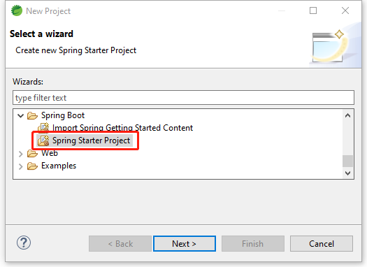
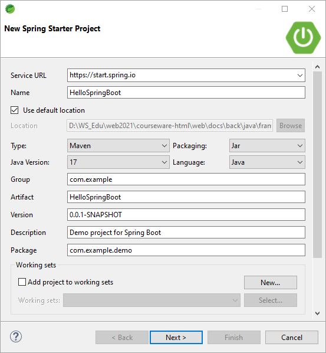
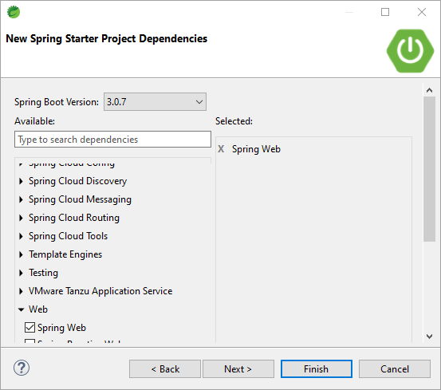

Spring Boot⯐
概述
Spring Boot 是基于 Spring Framework 构建的快速开发脚手架，核心设计理念为约定优于配置，用于简化 Spring 应用的搭建、配置、部署与运维。 它不替代 Spring，而是通过自动配置、起步依赖、内嵌容器等特性，实现独立运行、开箱即用，是 Java 后端、微服务、云原生开发的主流基础框架。
发展历程
Spring Boot的发展历程可以分为以下几个阶段：
-
2013年：Spring Boot项目正式启动，旨在简化Spring应用程序的开发和部署。
-
2014年：Spring Boot 1.0版本发布，引入了自动配置、起步依赖等特性，大大简化了Spring应用程序的开发和部署。
-
2015年：Spring Boot 1.2版本发布，引入了Actuator、Devtools等特性，增强了应用程序的监控和管理能力。
-
2016年：Spring Boot 1.4版本发布，引入了多种新特性，例如Spring Cloud、Spring Security等，进一步扩展了Spring Boot的功能和应用范围。
-
2017年：Spring Boot 2.0版本发布，引入了对Java 9和Java EE 8的支持，同时升级了多个依赖库，提高了应用程序的性能和稳定性。
-
2018年：Spring Boot 2.1版本发布，引入了多种新特性，例如WebFlux、Kotlin支持等，进一步提高了应用程序的性能和开发效率。
-
2019年：Spring Boot 2.2版本发布，引入了多种新特性，例如Micrometer、RSocket支持等，进一步扩展了Spring Boot的功能和应用范围。
核心特性
对常用场景依赖进行聚合与版本管理，引入一个 Starter 即可获得整套技术栈，避免依赖冲突。
示例（Maven）
根据类路径下的依赖，自动装配 Bean，无需 XML 配置。
例如引入 web 自动配置 DispatcherServlet，引入 jdbc 自动配置数据源。
支持 .properties / .yml，可配置端口、数据源、日志、多环境等。
application.yml 示例
Hello World!
开发环境
-
使用Eclipse开发；默认支持Java Web应用
需要额外安装Spring Boot等插件
-
使用STS（Spring Tool Suite）默认支持Spring Boot应用
STS是一个专为Spring开发定制的Eclipse，方便创建、调试、运行及维护Spring应用。通过该工具，可以很方便地生成一个Spring工程，比如Web工程。
创建Spring Boot Web工程
在STS中创建新工程，选择Spring Starter Project向导

输入工程基本信息：
- Service URL: https://start.aliyun.com
- Name: HelloSpringBoot

为工程选择Spring Web依赖，支持Spring及Spring MVC

向导完成后生成的目录结构如下：
工程创建向导完成后，Mavan配置文件pom.xml的关键依赖如下：
源代码
在com.example.demo下创建类HelloController：
源代码
| HelloSpringBoot/src/main/java/com/example/demo/HelloController.java | |
|---|---|
在com.example.demo下创建类ViewController：
源代码
在resources/templates下创建文件hello.html：
在浏览器访问http://localhost:8080/hi，结果如下：
Hello World执行原理图
@SpringBootApplication"]:::primary --> B["SpringApplication.run()"] B --> C["自动配置核心"] C --> C1["自动包扫描
创建Bean到IOC容器"] C --> C2["自动装配MVC、Tomcat、Thymeleaf"] C --> C3["启动内嵌Tomcat :8080"] %% 视图相关自动配置 C2 --> D["视图解析器 ViewResolver"]:::danger D --> D1["Thymeleaf 模板渲染"]:::success D --> D2["静态资源映射 /static/**"] %% 请求入口 E[浏览器] -->|请求| F[内嵌Tomcat] F --> G[DispatcherServlet
中央分发器]:::warning G --> H[HandlerMapping
URL匹配Controller方法] H --> I[执行对应Controller]:::info %% 两种返回分支 I -->|RestController
返回字符串/JSON| J["直接响应数据给浏览器"] I -->|Controller
返回视图名| K["视图解析器渲染HTML"] K --> D1 D1 --> L["返回动态页面"] J --> E L --> E %% 整体特性框 subgraph Spring Boot 核心特性 C1 C2 C3 D D1 D2 end
标准项目结构
src
├── main
│ ├── java/com/example
│ │ ├── DemoApplication.java // 启动类（必须在根包）
│ │ ├── controller // 控制层：接收请求、参数校验、返回结果
│ │ ├── service // 业务逻辑层
│ │ │ └── impl // 业务实现类
│ │ ├── mapper // 数据访问层（MyBatis）
│ │ ├── entity // 数据库映射实体
│ │ ├── dto // 接口入参/出参对象
│ │ ├── config // 配置类（Mvc、线程池等）
│ │ ├── common // 工具类、统一返回、常量
│ │ ├── exception // 全局异常、自定义异常
│ │ └── interceptor // 请求拦截器
│ └── resources
│ ├── application.yml // 主配置
│ ├── application-dev.yml // 开发环境
│ ├── application-prod.yml // 生产环境
│ ├── mapper // MyBatis XML 文件
│ ├── static // 静态资源（js/css/img）
│ └── templates // 模板页面（Thymeleaf）
└── test
└── java/com/example
└── DemoApplicationTests.java // 单元测试
注解
使用注解，以更简洁、更直观、更紧凑的方式替代XML配置，实现Spring容器的自动管理与依赖注入，降低耦合、提升开发效率，并支持声明式事务、定时、异步等能力，最终让代码更易维护、更易扩展。
-
降低使用门槛，开箱即用；注解简单直观，学习成本低。只需一个
@SpringBootApplication、@RestController就能快速搭建可用功能，无需理解底层复杂机制，极大提升开发效率。 -
让 Spring 自动管理对象（IOC）；通过
@Service、@Component、@Repository等注解，告诉 Spring 哪些类需要被实例化、管理。由容器统一创建、销毁、维护 Bean，开发者不再手动new对象，实现控制反转。 -
自动依赖注入（DI），解耦代码；使用
@Autowired、@Resource可以自动注入依赖对象，不用手动传递、不用关心对象创建顺序，模块间耦合度大幅降低，便于扩展和测试。 -
声明式编程，专注业务而非底层细节；像
@Transactional、@Async、@Scheduled、@Cacheable这类注解， 只需要声明功能，不需要手动编写事务、线程、定时、缓存的底层代码，让开发者专注业务逻辑。 -
便于静态检查与编译期校验；注解在编译期就能被 IDE 识别，可提前提示错误；相比 XML 这种运行时才加载的配置，注解更安全、更容易排查问题。
-
支持高度灵活的扩展与切面能力；Spring 可以基于注解做 AOP、权限校验、日志、监控等统一增强。 通过注解就能给方法附加通用能力，不用侵入业务代码，实现无侵入增强。
-
适配 Spring Boot 自动配置机制；Spring Boot 的自动配置就是基于类路径和注解来判断是否加载组件，没有注解，自动配置无法生效。注解是 Spring Boot “约定优于配置”的核心实现方式。
核心注解
启动与容器类
Spring Boot 项目的“入口”和“容器管理核心”，负责启动项目、声明配置类、将对象（Bean）交给 Spring 容器管理，是所有功能的基础。
| 注解 | 作用说明 |
|---|---|
@SpringBootApplication |
项目启动类唯一核心注解，整合 @Configuration（配置类）、@EnableAutoConfiguration（自动配置）、@ComponentScan（包扫描）三大功能 |
@Configuration |
标记当前类为配置类，替代传统 XML 配置文件，用于编写自定义配置 |
@Bean |
配合 @Configuration 使用，手动创建 Bean 并注入 Spring 容器，供其他组件调用 |
@Component |
通用组件注解，标记不属于三层（Controller/Service/Mapper）的普通类，让 Spring 管理该类实例 |
@SpringBootTest |
测试类专用注解，用于启动 Spring 容器，进行单元测试或集成测试 |
Web 控制层
专门处理前端 HTTP 请求，负责路径映射、参数接收、响应结果（JSON 为主），是前后端交互的核心层。
| 注解 | 作用说明 |
|---|---|
@RestController |
整合 @Controller（标记控制器）和 @ResponseBody（返回 JSON 格式），无需单独加 @ResponseBody |
@GetMapping |
专门处理 GET 请求，简化 @RequestMapping(method = RequestMethod.GET) |
@PostMapping |
专门处理 POST 请求，简化 @RequestMapping(method = RequestMethod.POST) |
@PathVariable |
接收 URL 路径中的参数（如 /user/1 中的 1），需配合路径占位符使用 |
@RequestParam |
接收 URL 查询参数（如 /user?name=张三）或表单参数，支持设置默认值 |
@RequestBody |
接收前端传递的 JSON 格式请求体，自动将 JSON 转换为 Java 对象 |
业务与持久层
分层开发的核心，负责封装业务逻辑、处理数据库操作，保证数据一致性（事务），是项目的“业务核心”。
| 注解 | 作用说明 |
|---|---|
@Service |
标记当前类为业务逻辑层组件，让 Spring 管理，便于依赖注入 |
@Mapper |
MyBatis 专用注解，标记数据访问层接口，MyBatis 会自动生成接口的代理实现类，无需手动编写实现 |
@Repository |
标记数据访问层组件（多用于 JPA 或传统 JDBC），与 @Mapper 功能类似，侧重非 MyBatis 场景 |
@Transactional |
声明式事务管理，标记在方法或类上，保证方法内的数据库操作原子性（要么全成、要么全败） |
依赖注入类
Spring 核心特性，无需手动 new 对象，从 Spring 容器中自动获取已注册的 Bean，降低组件间耦合度。
| 注解 | 作用说明 |
|---|---|
@Autowired |
Spring 提供的依赖注入注解，按类型注入（优先匹配 Bean 的类型），若有多个同类型 Bean 会报错 |
@Resource |
JDK 提供的依赖注入注解，按名称注入（优先匹配 Bean 的名称），也可按类型注入，兼容性更强 |
@Qualifier |
配合 @Autowired 使用，指定要注入的 Bean 名称，解决同类型 Bean 冲突问题 |
配置读取类
读取项目配置文件（application.yml 或 application.properties）中的参数，避免硬编码，提高配置灵活性。
| 注解 | 作用说明 |
|---|---|
@Value |
读取单个配置项，语法 ${配置项key}，适合读取简单配置（如端口、密码） |
@ConfigurationProperties |
批量读取配置项，通过 prefix 指定配置前缀，自动绑定到实体类的属性上，适合读取复杂配置（如数据源、Redis） |
全局增强类
全局统一处理 Controller 层的异常、统一响应格式，避免重复编码，提升项目规范性。
| 注解 | 作用说明 |
|---|---|
@RestControllerAdvice |
全局增强 Controller，作用于所有带 @RestController 的类，可用于全局异常处理、响应格式封装 |
@ExceptionHandler |
配合 @RestControllerAdvice 使用，指定要捕获的异常类型，处理该类型的所有异常 |
定时任务 & 异步
用于实现定时执行任务（如定时备份数据）、异步调用（如异步发送短信），提升项目性能和灵活性。
| 注解 | 作用说明 |
|---|---|
@EnableScheduling |
开启定时任务功能，必须加在启动类上，否则定时任务不生效 |
@Scheduled |
标记方法为定时任务，通过 cron 表达式或 fixedRate 设定执行规则 |
@EnableAsync |
开启异步调用功能，必须加在启动类上，否则异步方法不生效 |
@Async |
标记方法为异步执行，调用该方法时会开启新线程，不阻塞主线程 |
Lombok 简化代码
第三方工具注解，无需手动编写 getter/setter、构造方法、日志对象，大幅简化代码，提升开发效率（需导入 Lombok 依赖）。
| 注解 | 作用说明 |
|---|---|
@Data |
整合 @Getter、@Setter、@ToString、@EqualsAndHashCode、@RequiredArgsConstructor，一键生成常用方法 |
@Slf4j |
自动注入日志对象 log，可直接使用 log.info()、log.error() 打印日志 |
@NoArgsConstructor |
生成无参构造方法 |
@AllArgsConstructor |
生成全参构造方法（所有属性都作为参数） |